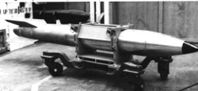
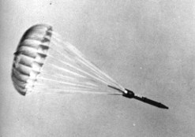
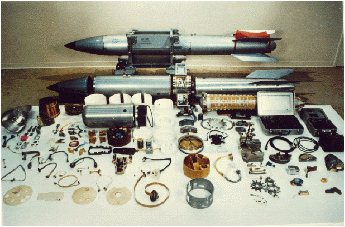

|  |
|  |
|  |
The B61, which exists in several mods, is actually a family of weapons based on a single basic weapon and physics package design. The physics package of the B61 has been adapted to yield several other warheads - the W-80, W-81 (now retired and dismantled), W-84 (now retired and in the inactive stockpile), and the W-85 (which was retired, and then readapted to yield another B61 variant). See W-80 page for pictures of the actual warhead.
| Weight | 695-716 lbs |
|---|---|
| Length (body) | 10 ft 10.75 in (130.75 in) |
| Length (incl. fins) | 11 ft 9.5 in (141.5 in) |
| Body Diameter | 13.4 in |
| Tail Fin Span | 22.5 in |
| Number In Service | 600 (tactical), 750 (strategic) |
| Mod-3 | |
| Available Yields (Kt) | 0.3 / 1.5 / 60 / 170 |
| Type | Tactical |
| Mod-4 | |
| Available Yields (Kt) | 0.3 / 1.5 / 10 / 45 |
| Type | Tactical |
| Mod-7 | |
| Available Yields (Kt) | 10 / ? / 340 |
| Type | Strategic |
| Mod-10 | |
| Available Yields (Kt) | 0.3 / 5 / 10 / 80 |
| Type | Tactical |
| Mod-11 | |
| Available Yields (Kt) | 0.3? / ? / 340 |
| Type | Tactical/Strategic |
Two stage radiation implosion weapon.
Light weight, intermediate yield bomb with variable yield options ("dial-a-yield" or DAY), and flexible fuzing and delivery options. Designed for high-speed external carriage and low altitude delivery. Modular weapon system design.
Contains two neutron generators (supplied by General Electric).
Spin stabilized by rocket. 24 ft. Nylon/Kevlar-29 ribbon parachute ejected by gas generator. Allows rapid deceleration from supersonic velocity (only 2 seconds required to decelerate to 35 mph). Tested at up to Mach 1.2.
The lowest yield option for the B61 (the same for all tactical mods) is 300 tons which probably represents the basic unboosted yield of the fission primary.
The B61 has four major sections:
Current models are made up of 6000 parts in 1800 subassemblies, manufactured by 570 suppliers and 9 principal contractors.
Features of individual models currently in stockpile:
Primary consists of beryllium reflected plutonium (the derivative W80-0 contains supergrade plutonium)
Deuterium-tritium boosted
Primary also contains aluminum and uranium
Contains oralloy (highly enriched uranium), either in primary or as secondary tamper
Lithium-6 (95% enrichment) deuteride fusion fuel
Although early mods used PBX-9404 high explosive, current mods all use PBX-9502 insensitive high explosive (IHE) - a TATB plastic bonded explosive composition.
Deliverable by any U.S. or NATO nuclear qualified aircraft including:
Currently the B61-11 is deployed for use with the stealthy B-2 bomber, which entered service in a nuclear role on 1 April 1997.
See Principles of Nuclear Weapons Security and Safety for explanations of these features.
In flight fuzing and yield selection merely by turning a dial. Full fuzing options (FUFO): high or low speed delivery, high altitude or low altitude (release heights as low as 50 ft.). Current mods have five fuzing options:
The Mod 11 has a special ground impact time delay feature to allow it to penetrate into the earth before detonating.
Delivery accuracy <600 feet.
Designed and developed by Los Alamos Scientific Laboratory (LASL/LANL)
The B61 was developed to provide a light weight weapon of intermediate yield that could be carried by modern high performance combat aircraft. These aircraft do not carry weapons internally like the older or larger bomber designs, but instead carry them externally on the wings or fuselage. This requires weapons of very low drag, and able to withstand the aerodynamic heating of supersonic flight. In addition, the greater maneuverability of modern combat aircraft, combined with the increased lethality of defense systems makes the option of low altitude delivery both possible and necessary. The initial interest in this type of weapon dates back to 1960.
The original B61 bomb and warhead systems have gone through many modifications since the initial development effort, extending up to the present time (a ground penetrator version is in development right now).
The adoption of IHE in the Mod 3 and 4 resulted in stockpile problems that carried over into a number of other mods and related warhead types. IHE proved vulnerable to unexpectedly reduced performance at low temperatures (perhaps due to the unusual properties of TATB). A low-temperature test in the early 80s revealed a yield reduction of 25%, requiring some redesign.
The latest mod of the B61, the B61-11, began entering service in January 1997. It is a modified Mod 7, a version with built-in warhead shock resistance. The Mod-11 has a greatly strengthened bomb case for destroying buried command centers, and will replace the 9 Megaton B-53 in that role. The Mod-11 was jointly developed by LANL and Sandia National Laboratories. In February 1996 the drop test program began, and 13 drop tests of the Mod 11 were conducted in 1996 (3 in Alaska, and 10 at the Tonopah Test Range in Nevada). By January Sandia had shipped 10 training versions of the modified B61, to the U.S. Air Force last month as training devices, plus nine sets of customized bomb-handling gear. Modifications were scheduled to begin in January. The Kansas City Plant and Oak Ridge are currently delivering conversion kits to the Air Force, whose engineers are performing the actual modifications. Kit fabrication at Kansas City is expected to continue until at least 1999.
Although an August 1995 authorization date is given for the development of the B61-11, the project appears to trace back to the W-61 EPW (earth penetrating warhead) project begun in 1989. The EPW was also a derivative of the B61-7, packaged in a high-strength steel case, and had gotten as far as production engineering in 1991.
The B61-11 has a reported capability to destroy targets at depths of several hundred feet at its highest yield setting.
Efforts are currently underway at Sandia to develop a new weapon using the B61 warhead package. This is the BIOS (Bomb Impact Optimization System), a guided glide bomb that would permit release of nuclear weapons at a greater range from the target, and by using the GPS satellite system would permit delivery with 1 meter accuracy.
| 4 August 1960 | Sandia and LASL authorized to study light weight FUFO bomb |
|---|---|
| 16 October 1961 | Program to develop light weight FUFO bomb initiated |
| 18 January 1963 | FUFO bomb designated TX-61 |
| 20 August 1963 | Free fall ballistic tests begun on bomb |
| May 1965 | Production engineering of B61-0 begun |
| October 1966 | First war reserve quality B61-0 built |
| 21 December 1966 | First war reserve quality B61-0 accepted into inventory |
| January 1967 | Quantity production of B61-0 begins |
| January 1969 | Quantity production of B61-0 ends |
| February 1969 | Quantity production of B61-1 begins (later modified to Mod 7, still in stockpile) |
| April 1971 | Quantity production of B61-1 ends |
| April 1972 | Development engineering of B61-3 and B61-4 begins |
| May 1979 | Development engineering of B61-7 (conversion of B61-1 begins) |
| August 1979 | Quantity production of B61-4 begins |
| October 1979 | Quantity production of B61-3 begins |
| May 1983 | Quantity production of W-85 begins (later converted to B61-10) |
| September 1985 | Quantity production of B61-7 begins |
| April 1989 | Production engineering of B61-10 begins (conversion of W-85) |
| June 1990 | Quantity production of B61-10 begins |
| August 1995 | B61-11 development authorized |
| February 1996 | Drop test of B61-11 conducted in Alaska |
| January 1997 | B61-11 enters service, quantity production of conversion kits begins |
Initial manufacture October 1966
Quantity manufacture begins January 1967
Initial deployment 1967
Approximately 3150 B61 bombs of all mods have been manufactured.
Currently in service: 600 tactical bombs (mods 3, 4 and 10) and 750 strategic bombs (mod-7). Mod-7s are currently being converted to Mod-11, which can be used in either a tactical or strategic role.
Of the 12 mods manufactured, 5 remain in service. The oldest bombs are arguably B61-7 bombs (converted B61-1 bombs), manufactured in their original model starting in 2/69, but since rebuilt (starting in 9/85). The oldest mod currently in service is the B61-4 first manufactured in 8/79. The "newest" bombs are the Mod-11, but these are just Mod-7 warheads repackaged in a new body.